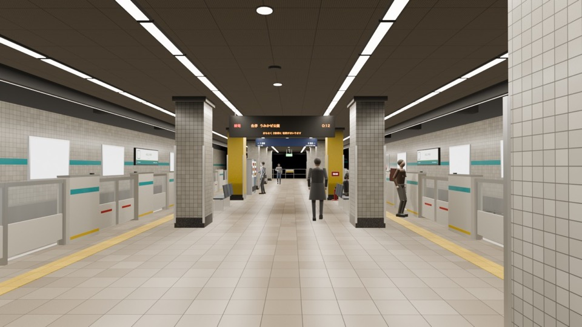
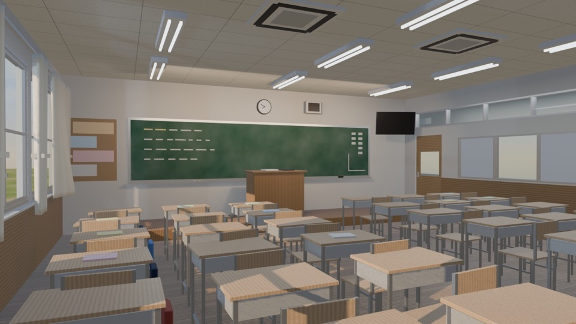

trkAR
AR camera tracking for virtual production
JA / EN
AR camera tracking for virtual production
trkAR は、iPhone / iPad をバーチャルプロダクション用のカメラトラッカーにするアプリです。ARKit で求めたカメラの位置と向きを、OSC で PC (TouchDesigner、Blender など) へリアルタイムに送ります。
Blender でカメラを trkAR に追従させ、NDI の映像を受け、テイクを録って書き出すアドオン trkAR Camera を Releases で配っています。使い方は はじめかた、動画生成 AI に渡す素材の作り方は 生成用の素材、自分のクラウドやツールへのつなぎ方は 連携 を見てください。
アドオンで試せる Blender のシーンを 2 つ、Releases で配っています (CC BY 4.0)。

